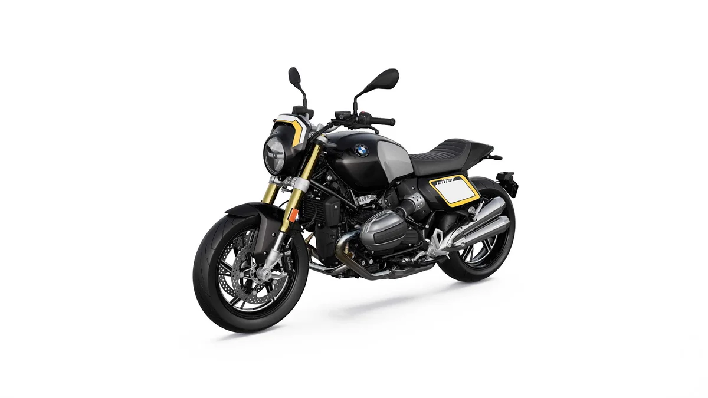
▲ R 12 nineT에 더 트래커 패키지를 적용한 모습 ⓒ BMW Group PressClub (사용자 책임)
"클래식 바이크에 레이스 번호판을 단 차가 3,220만 원이면 비싼 걸까?" 2026년 10월 20일 BMW 모토라드 코리아가 R 12 nineT 트래커 에디션을 국내에 단 10대만 판다고 발표했고, 이 글은 보도된 가격·수량·부품을 정리하고 기본 R 12 nineT와 비교해 따져 본다.
결론부터 말하면 확인되는 숫자는 많지 않다. 한정 수량 10대, 가격 3,220만 원(부가세 포함), 온라인 판매는 여러 매체가 같은 내용으로 전했다. 반면 키트 단품 가격과 현재 기본 모델 가격, 인도 시기는 이번 조사에서 확인하지 못했다.
1. 무엇이 나왔나: 기본 R 12 nineT에 '더 트래커'를 입혔다
이번 에디션은 새 엔진이나 새 차체가 아니라 기존 R 12 nineT에 순정 액세서리 패키지를 적용한 한정판이다. 국내 보도에 따르면 기본 모델은 블랙스톰 메탈릭 색상의 헤리티지 로드스터 R 12 nineT이고, 여기에 미국 플랫트랙 레이싱 머신에서 영감을 얻은 '더 트래커' 패키지를 얹었다. 플랫트랙은 타원형 비포장 트랙에서 겨루는 경주다.
이 글은 BMW 모토라드 코리아의 발표 내용을 전한 뉴스핌·오토헤럴드·카매거진·오토다이어리 기사를 대조해 정리했다. 매체마다 표기가 조금 다르지만 가격과 수량, 부품 구성은 서로 일치했다.
▲ R 12 nineT에 더 트래커 패키지를 적용한 모습. 헤드라이트를 감싼 페어링과 번호판형 패널이 보인다 ⓒ BMW Group PressClub, 사용자 책임
| 항목 | 내용 |
|---|---|
| 수량 | 국내 10대 한정 |
| 가격 | 3,220만 원(부가세 포함) |
| 판매 채널 | BMW 모토라드 샵 온라인(10월 20일 오후 2시 시작) |
| 기본 모델 | R 12 nineT 블랙스톰 메탈릭 |
| 적용 패키지 | 순정 액세서리 '더 트래커' |
| 첫 공개 | 10월 24일(토) BMW 드라이빙 센터, BMW 모토라드 데이즈 2026 |
| 인도 시기 | 보도에 명시되지 않음 |
2. 트래커 키트에 들어간 것: 앞은 페어링, 뒤는 짧게
국내 보도 기준 구성은 앞쪽 콕핏 페어링, 옆면 번호판형 패널, 17인치 전륜 커버, 그리고 뒤쪽의 단일 시트·짧은 리어 커버·알루미늄 번호판 홀더다. 모두 블랙스톰 메탈릭 도장이 기본이고, 3피스 데칼은 라이트 화이트·썬 옐로우·미드나잇 블랙 색에 'nineT' 레터링이 들어간다고 전해졌다.
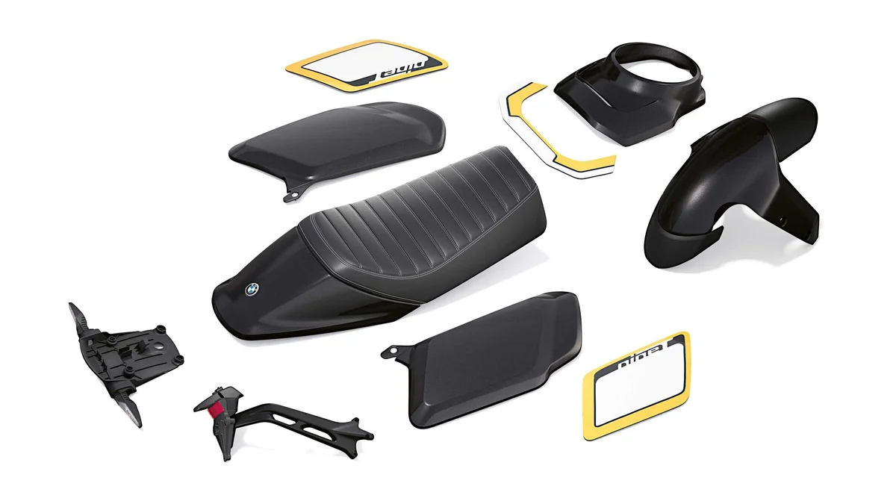
▲ 더 트래커 패키지 구성 부품. 단일 시트와 전륜 커버, 번호판형 패널, 콕핏 페어링이 보인다 ⓒ BMW Group PressClub, 사용자 책임
| 위치 | 부품 |
|---|---|
| 앞 | 헤드라이트를 감싸는 콕핏 페어링, 17인치 전륜 커버(상단 메탈릭, 하단 질감 마감) |
| 옆 | 레이스 번호판 형태의 사이드 패널, 3피스 데칼 세트 |
| 뒤 | 전용 단일 시트(국내 보도), 짧은 리어 커버, 뒷바퀴 축 부근 알루미늄 번호판 홀더, 다기능 방향지시등 |
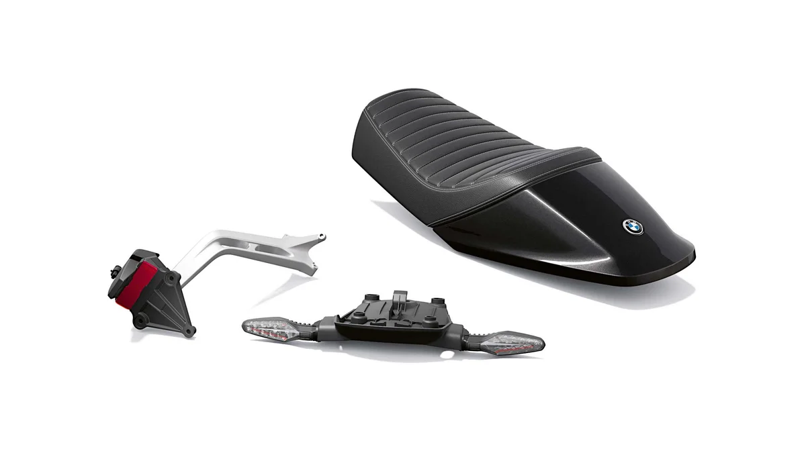
▲ 리어 구성 부품. 단일 시트와 번호판 홀더, 다기능 방향지시등이 보인다 ⓒ BMW Group PressClub, 사용자 책임
BMW가 2025년 8월 28일 글로벌에 먼저 낸 보도자료는 이 패키지를 R 12 nineT용 액세서리로 소개하며 차량과 함께 인증(homologation)을 받아 추가 등록이 필요 없다고 밝혔다. 다만 이는 글로벌 발표 내용이고, 국내 등록 절차가 어떻게 되는지는 이번 조사에서 확인하지 못했다. 같은 보도자료는 키트 구성품을 개별로도 살 수 있고 전문 정비소 장착을 권한다고 적었지만 가격은 싣지 않았다. 원문은 공식 자료에서 확인할 수 있다. BMW 글로벌 보도자료 바로가기
📍 사진 속 '35번'은 키트에 없다
글로벌 보도자료 설명에 따르면 사진에 보이는 타이어와 레이스 번호 35는 패키지에 포함되지 않고, 번호는 고객이 직접 골라 붙이는 방식이다. 국내 판매 구성품에 번호 스티커가 따로 있는지는 확인하지 못했다.
3. 달라지지 않은 것: 109마력 박서와 시프트 어시스턴트 프로
엔진은 기본 R 12 nineT와 같은 1,170cc 공·유랭식 수평대향 2기통으로, 보도된 최고출력은 109마력, 최대토크는 11.7kg·m다. 주행 모드는 레인·로드·다이내믹 3종이고, 클러치 조작 없이 변속할 수 있는 시프트 어시스턴트 프로가 기본이라고 전해졌다. 이 사양은 2024년 국내 출시 당시 오토뷰가 전한 R 12 nineT 제원과도 같다.
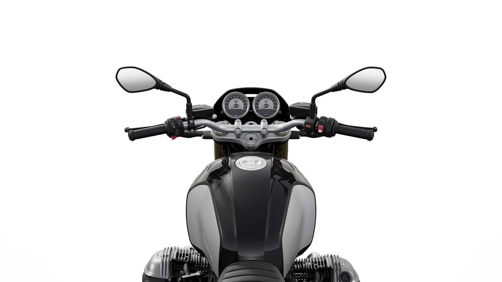
▲ R 12 nineT 계기판과 연료탱크를 위에서 본 모습 ⓒ BMW Group PressClub, 사용자 책임
즉 트래커 에디션은 성능을 더한 모델이 아니라 겉모습을 바꾼 모델이다. 가속이나 최고속도 수치는 이번 발표에 나오지 않았다.
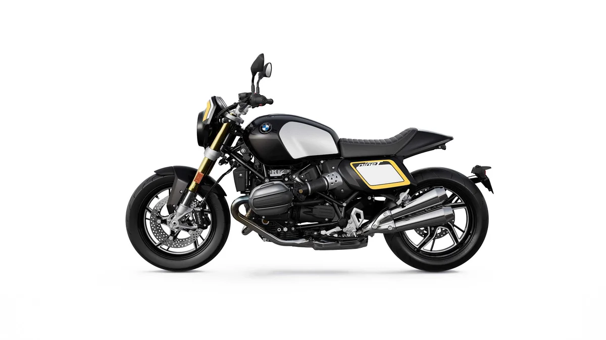
▲ 오른쪽 측면. 길게 이어진 탱크와 짧게 정리된 뒷부분이 대비된다 ⓒ BMW Group PressClub, 사용자 책임
4. 3,220만 원은 비싼가: 2024년 출시가와 비교
2024년 4월 국내 출시 당시 R 12 nineT는 2,810만~3,090만 원(부가세 포함)이었고, 트래커 에디션은 이보다 130만~410만 원 높은 3,220만 원이다. 다만 이 비교는 2년 반 전 가격이라 한계가 있다. 오토뷰와 리포터라 모두 2024년 출시 기사이고, 2026년 현재 R 12 nineT 국내 가격표는 이번 조사에서 확인하지 못했다.
| 모델 | 가격 | 기준 |
|---|---|---|
| R 12 nineT(2024년 출시) | 2,810~3,090 | 오토뷰·리포터라 보도, 트림·색상별 |
| R 12 nineT 트래커 에디션 | 3,220 | 2026년 10월 20일 보도, 10대 한정 |
| 차이 | 130~410 | 현재 기본 가격 확인 시 달라질 수 있음 |
키트를 따로 사면 얼마인지도 알 수 없어서 "한정판 프리미엄"인지 "부품값 합"인지는 판단할 수 없다. 보도에는 가격 근거 설명이 없다. 같은 브랜드의 입문용 모델은 F 450 GS 사전예약 기사에서 다뤘는데, 익스클루시브 1,250만 원, GS 트로피 1,350만 원으로 박서 헤리티지와는 체급과 성격이 다르다.
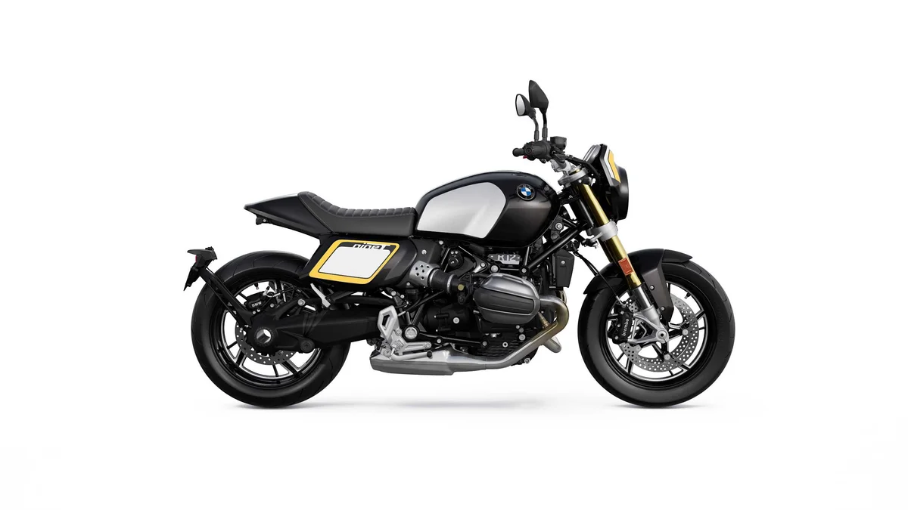
▲ 왼쪽 측면. 사이드 패널의 번호판 모양이 한눈에 들어온다 ⓒ BMW Group PressClub, 사용자 책임
5. 사는 방법과 일정: 온라인 판매, 실물은 24일 공개
판매는 10월 20일 오후 2시부터 BMW 모토라드 샵 온라인에서 시작됐고, 실물은 10월 24일 BMW 드라이빙 센터에서 열리는 'BMW 모토라드 데이즈 2026'에서 처음 공개된다고 보도됐다. 오토헤럴드는 행사 장소를 인천 영종도 BMW 드라이빙 센터로 적었다. 실물 공개가 판매 시작보다 나흘 늦다는 점은 눈여겨볼 대목이다.
10대 한정이라 재고가 빨리 소진될 수 있지만, 결제 방식이나 선착순 여부, 출고 시기는 보도에 없다. 구매를 고민한다면 판매 페이지의 재고와 인도 조건을 직접 확인하는 편이 안전하다. BMW 코리아가 온라인 한정으로 차를 파는 방식은 BMW 온라인 전용 에디션 기사에서도 다뤘다.
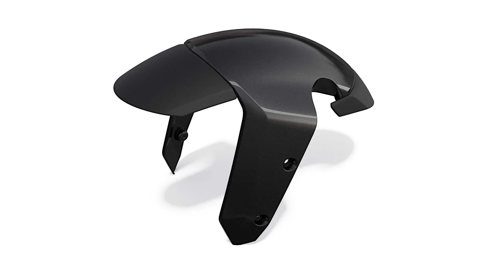
▲ 17인치 전륜 커버. 상단은 메탈릭 도장, 하단은 질감 마감으로 보도됐다 ⓒ BMW Group PressClub, 사용자 책임
6. 사기 전에 확인할 것: 면허·보험은 기본만
배기량이 1,170cc인 이륜차는 2종 소형 면허로 운전할 수 있고, 책임보험 가입은 법으로 의무다. 도로교통법 시행규칙 별표 18에서 2종 소형면허로 운전할 수 있는 차는 이륜자동차와 원동기장치자전거로 정해져 있고, 배기량 제한은 따로 두지 않는다. 자동차손해배상 보장법 제5조 제1항은 자동차보유자에게 책임보험 등에 가입하도록 의무를 지우며, 이륜자동차도 자동차관리법상 자동차에 속한다. 이 에디션은 면허나 보험에서 특별한 조건이 붙는 모델이 아니므로 일반적인 이륜차 기준을 그대로 따르고, 실제 보험료와 가입 방법은 보험사 안내로 확인해야 한다.
✅ 구매 전 체크리스트
· 실제 가격 구성 — 3,220만 원에 키트가 모두 포함되는지, 등록 비용은 별도인지 판매 페이지에서 확인
· 인도 시기 — 보도에 없으므로 구매 시 안내를 받아야 한다
· 키트 장착 상태 — 에디션은 키트가 적용된 상태로 판다고 보도됐지만 국내 등록 처리는 미확인
· 일상 사용성 — 단일 시트라 동승이 어려울 수 있어 실물을 보고 판단
장거리 투어용 박서가 궁금하면 카프리즘의 R 1300 RS 800km 시승기를 보면 된다. 같은 박서 계열이지만 쓰임새가 다르다.
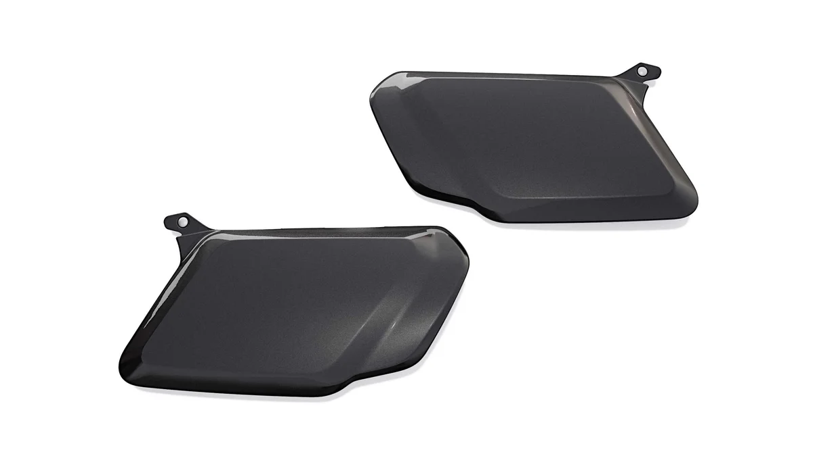
▲ 사이드 패널 단품. 완성차에는 노란 테두리 번호판형 데칼이 붙는다 ⓒ BMW Group PressClub, 사용자 책임
7. 참고: 이 계보의 시작, R nineT
R 12 nineT는 2014년 공개된 R nineT의 후속 계보다. 아래 사진은 앞 세대인 R nineT이며 R 12 nineT나 트래커 에디션이 아니다. 둥근 헤드라이트와 노출된 박서 실린더라는 기본 모양이 이어진다는 점을 보여 주는 용도다.
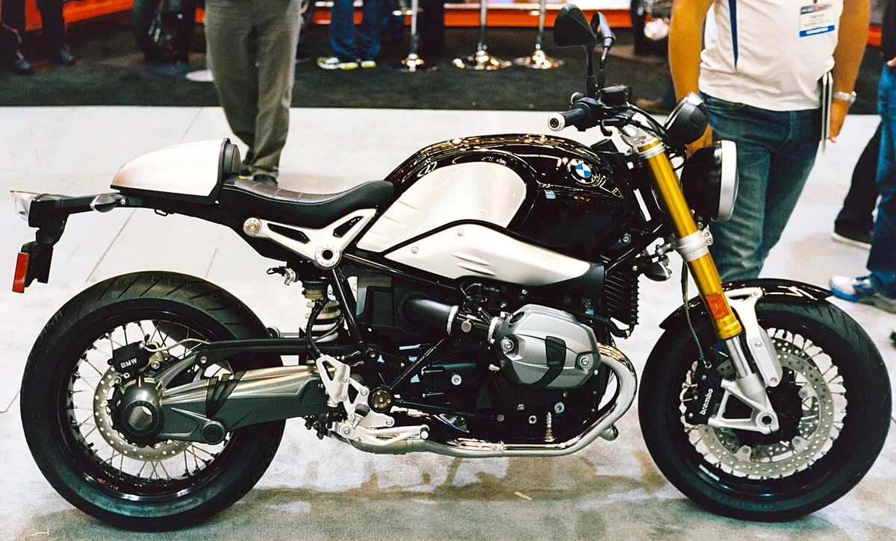
▲ 앞 세대 BMW R nineT 오른쪽 측면(R 12 nineT 아님) ⓒ Dennis Bratland, Wikimedia Commons (CC BY-SA 4.0)
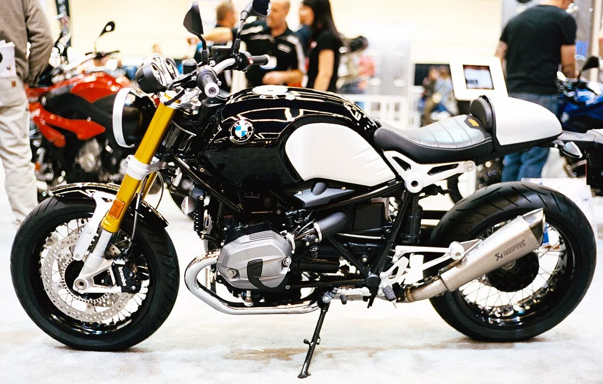
▲ 앞 세대 BMW R nineT 계열 전시 차량의 왼쪽 측면(R 12 nineT 아님, 개별 도장·부품 적용 차량) ⓒ Dennis Bratland, Wikimedia Commons (CC BY-SA 4.0)
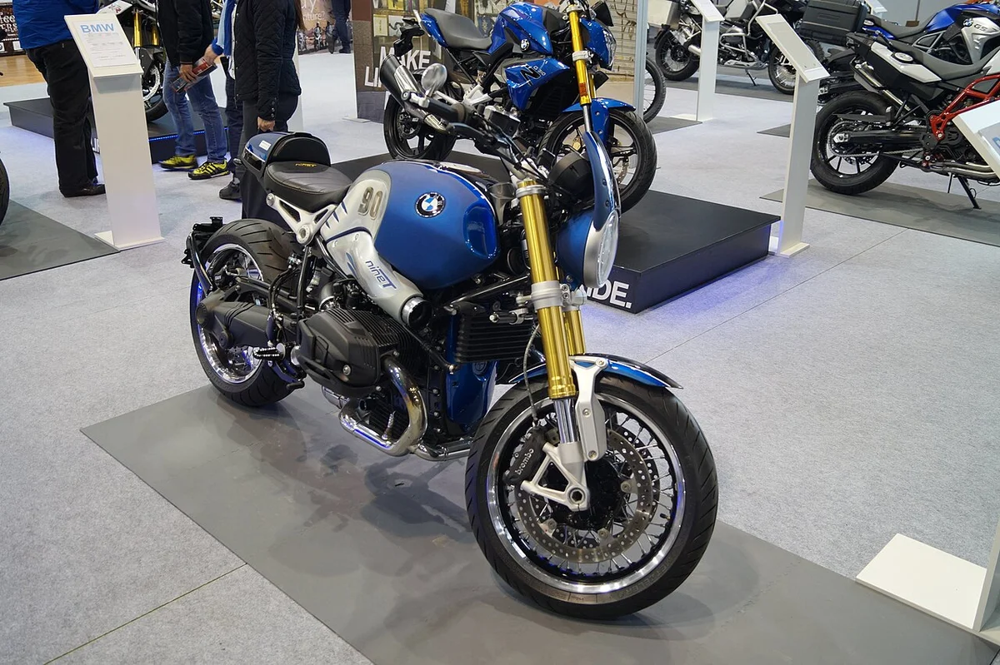
▲ 앞 세대 BMW R nineT 계열 전시 차량의 전측면(R 12 nineT 아님) ⓒ Jakub "Flyz1" Maciejewski, Wikimedia Commons (CC BY-SA 4.0)
8. 요약
BMW 모토라드 코리아는 R 12 nineT 트래커 에디션을 국내 10대 한정, 3,220만 원(부가세 포함)으로 10월 20일 오후 2시부터 온라인에서 판매한다. 기본 모델에 플랫트랙 레이서풍 순정 패키지 '더 트래커'를 적용했고, 1,170cc 박서 109마력 엔진은 그대로다.
2024년 출시가(2,810만~3,090만 원)와 비교하면 130만~410만 원 높지만 현재 기본 가격과 키트 단품가, 인도 시기는 확인하지 못했다. 실물은 10월 24일 BMW 드라이빙 센터에서 공개되므로 구매 전 판매 페이지의 조건을 직접 확인하는 편이 좋다.